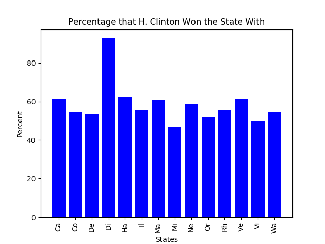
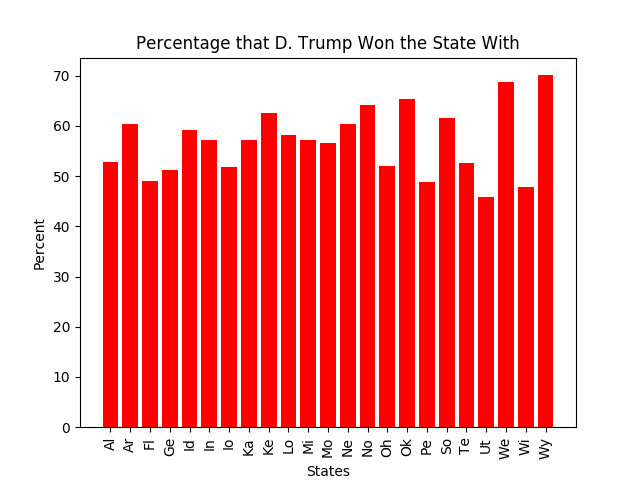
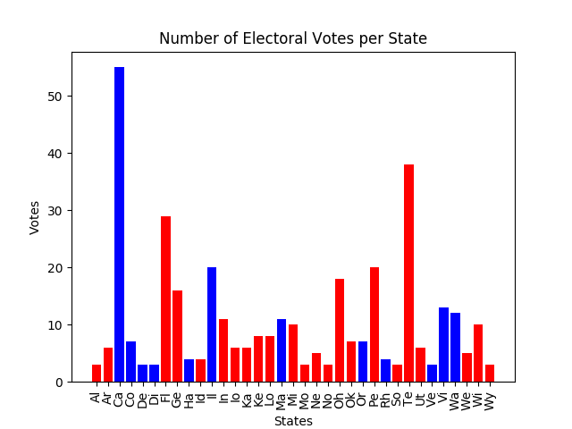

I wrote my bot to be writing posts in support of both Pete Butigege and Andrew Yang
I scraped all of my data off of a website that recorded voting information after the election. In this process, I went through the HTML of the website and found what tags I needed to inspect. I started by making a list of all of the different states by using the beautiful soup find_all() method to find every table of class "Results-Table". I also found all of the "h3" tags which were used to display the state names. Then I wrote a loop that went through all of the states and found their "name-combo" span classes which had the name of the nominee that one. I found the corresponding percentage of vote by finding the span "number" class. Then I just had to sort which name went into the democrat list, and which went into the republican list. Then I went through and found how many electoral votes the candidate got from each state they won (for the states in which the electoral college can split votes, I just did the majority).
Link to where I scraped the data from